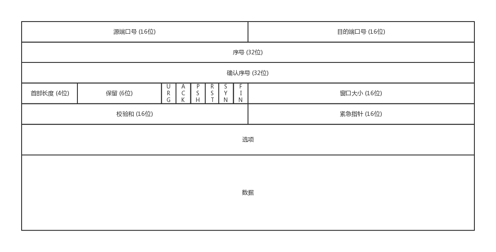
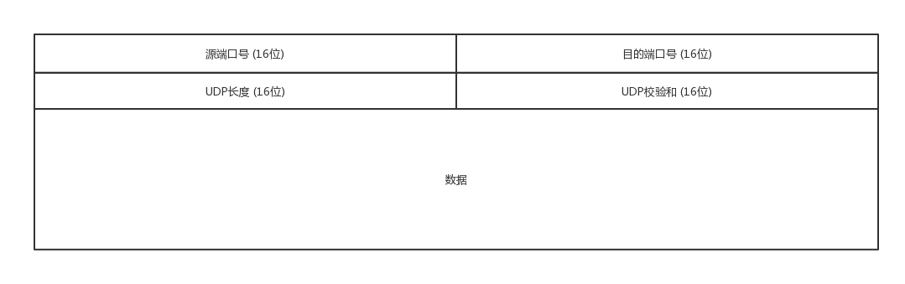
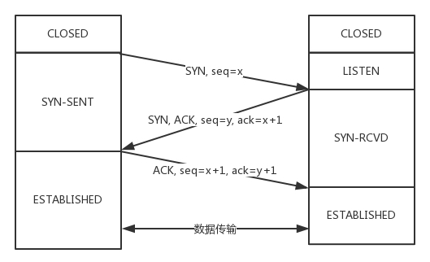
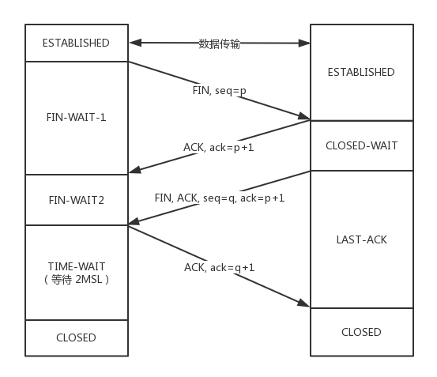
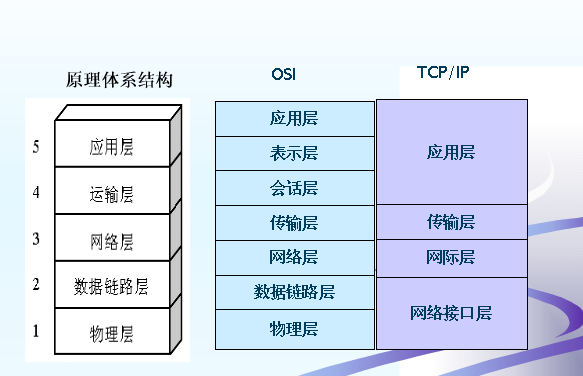

TCP/UDP头格式
网络包的格式
MAC头+IP头+TCP头+HTTP头+HTTP正文
TCP

- 源端口号和目标端口号，各16bit
- 包的序号（seq）：32 bits
- 确认序号（ack）：32 bits
- 状态位：例如 SYN 是发起一个连接，ACK 是回复，RST 是重新连接，FIN 是结束连接等。TCP 是面向连接的，因而双方要维护连接的状态，这些带状态位的包的发送，会引起双方的状态变更。
- 窗口大小：接收窗口的大小，16 bits
UDP

- 源端口（Source port）和目的端口（Destination port）
- 报文长度（Length）
16 bits，指示UDP报文（首部和数据）的总长度。16 bits，指示UDP报文（首部和数据）的总长度。最小8 bytes，只有首部，没有数据。最大值为65535 bytes。实际上，由于IPv4分组的最大数据长度为（65535 - 20 = 65515） bytes，UDP的报文长度不超过65515 bytes。
- 校验和（Checksum）
TCP和UDP报文区别
TCP首部开销（20字节），UDP首部开销（8字节）
UDP 包的大小就应该是 MTU1500 - IP头(20) - UDP头(8) = 1472(Bytes)
TCP 包的大小就应该是 MSS=MTU1500 - IP头(20) - TCP头(20) = 1460 (Bytes)
MTU： Maximum Transmit Unit，最大传输单元，即物理接口（数据链路层）提供给其上层（通常是IP层）最大一次传输数据的大小
Maximum Segment Size ，TCP提交给IP层最大分段大小
三次握手

- 一开始，客户端和服务端都处于 CLOSED 状态。先是服务端主动监听某个端口，处于 LISTEN 状态。
- 客户端主动发起连接 SYN，发送的序列号是X，之后处于 SYN-SENT 状态。
- 服务端收到发起的连接，返回 SYN，序列号为Y，并且ACK 客户端的 SYN，ack的值为X+1，之后处于 SYN-RCVD 状态。
- 客户端收到服务端发送的 SYN 和 ACK 之后，发送ACK 的 ACK，之后处于 ESTABLISHED 状态，因为它一发一收成功了。
- 服务端收到 ACK 的 ACK 之后，处于 ESTABLISHED 状态，因为它也一发一收了。
客户端发送的SYN丢失
在TCP的可靠传输中，如果SYN包在传输的过程中丢失，此时Client段会触发重传机制，但是也不是无脑的一直重传过去，重传的次数是受限制的，可以通过 tcp_syn_retries 这个配置项来决定。
- 如果此时 tcp_syn_retries 的配置为3，如果过了1s还没有收到 Server 的回应，那么进行第一次的重传。
- 如果经过了2s没有收到Sever的响应进行第二次的重传，一直重传tcp_syn_retries次。
- 这里的重传三次，意味着当第一次发送SYN后，需要等待
1 +2 +4 +8秒，如果还是没有响应，connect就会通过ETIMEOUT的错误返回。
为什么不是2次
服务器端的应答包不知道能不能到达客户端。这个时候 服务器端 自然不能认为连接是建立好了，因为应答包仍然会丢，会绕弯路，或者客户端已经挂了都有可能。
如果仅是两次连接。可能出现已失效的连接请求报文段又传到了服务器端：
- 客户端发送完请报文发起连接，由于网络情况不好，服务器端延时很长时间后收到报文。客户端将此报文认定为失效的报文，因为中间可能已经建立连接并断开了。
- 服务器端收到报文后，会向客户端发起连接。此时两次握手完毕。
- 服务器端会认为已经建立了连接可以通信，服务器端会一直等到客户端发送的连接请求，而客户端对失效的报文回复自然不会处理。会陷入服务器端忙等的僵局，造成资源的浪费。
为什么不是4次
可以。但是会降低传输的效率。
四次握手是指：第二次握手：服务器端只发送ACK和acknowledge number；而服务器端的SYN和初始序列号在第三次握手时发送；原来协议中的第三次握手变为第四次握手。出于优化目的，四次握手中的二、三可以合并。
第三次握手中，如果客户端的ACK未送达服务器，会怎样？
Server端：
由于Server没有收到ACK确认，因此会重发之前的SYN+ACK（默认重发五次，之后自动关闭连接进入CLOSED状态），Client收到后会重新传ACK给Server。
Client端，两种情况：
- 在Server进行超时重发的过程中，如果Client向服务器发送数据，数据头部的ACK是为1的，所以服务器收到数据之后会读取 ACK number，进入 establish 状态
- 在Server进入CLOSED状态之后，如果Client向服务器发送数据，服务器会以RST包应答。
初始序列号是什么？
TCP连接的一方A，随机选择一个32位的序列号（Sequence Number）作为发送数据的初始序列号（Initial Sequence Number，ISN），比如为1000，以该序列号为原点，对要传送的数据进行编号：1001、1002…三次握手时，把这个初始序列号传送给另一方B，以便在传输数据时，B可以确认什么样的数据编号是合法的；
同时在进行数据传输时，A还可以确认B收到的每一个字节，如果A收到了B的确认编号（acknowledge number）是2001，就说明编号为1001-2000的数据已经被B成功接受。
accept connect listen对应三次握手什么阶段
当服务端有了 IP 和端口号，就可以调用 listen 函数进行监听。 当调用这个函数之后，服务端就进入了这个状态，这个时候客户端就可以发起连接了
客户端可以通过 connect 函数发起连接。先在参数中指明要连接的 IP 地址和端口号，然后开始发起三次握手。 内核会给客户端分配一个临时的端口。
一旦握手成功，服务端的 accept就会返回另一个 Socket。
四次挥手

客户端进程发出连接释放报文，并且停止发送数据。释放数据报文首部FIN，其序列号为seq=u，客户端进入FIN-WAIT-1（终止等待1）状态。
服务器收到连接释放报文，发出确认报文ACK，ack=u+1，并且带上自己的序列号seq=v，此时，服务端就进入了CLOSE-WAIT（关闭等待）状态。TCP服务器通知高层的应用进程，客户端向服务器的方向就释放了，这时候处于半关闭状态，即客户端已经没有数据要发送了，但是服务器若发送数据，客户端依然要接受。这个状态还要持续一段时间，也就是整个CLOSE-WAIT状态持续的时间。
- 客户端收到服务器的确认请求后，此时，客户端就进入FIN-WAIT-2（终止等待2）状态，等待服务器发送连接释放报文（在这之前还需要接受服务器发送的最后的数据）。
服务器将最后的数据发送完毕后，就向客户端发送连接释放报文FIN，ack=u+1，由于在半关闭状态，服务器很可能又发送了一些数据，假定此时的序列号为seq=w，此时，服务器就进入了LAST-ACK（最后确认）状态，等待客户端的确认。
客户端收到服务器的连接释放报文后，必须发出确认，ACK，ack=w+1，而自己的序列号是seq=u+1，此时，客户端就进入了TIME-WAIT（时间等待）状态。注意此时TCP连接还没有释放，必须经过2MSL（最长报文段寿命）的时间后，才进入CLOSED状态。
- 服务器只要收到了客户端发出的确认，立即进入CLOSED状态。
如果第二次挥手时服务器的ACK没有送达客户端，会怎样？
客户端没有收到ACK确认，会重新发送FIN请求。
客户端TIME_WAIT状态的意义是什么？
第四次挥手时，客户端发送给服务器的ACK有可能丢失，TIME_WAIT状态就是用来重发可能丢失的ACK报文。如果Server没有收到ACK，就会重发FIN，如果Client在2*MSL的时间内收到了FIN，就会重新发送ACK并再次等待2MSL，防止Server没有收到ACK而不断重发FIN。
MSL（Maximum Segment Lifetime），指一个片段在网络中最大的存活时间，2MSL就是一个发送和一个回复所需的最大时间。如果直到2MSL，Client都没有再次收到FIN，那么Client推断ACK已经被成功接收，则结束TCP连接。
2MSL作用
服务端发送的FIN+ACK报文请求，客户端没有回应，于是服务器又会重新发送一次，而客户端就能在这个2MSL时间段内收到这个重传的报文，接着给出回应报文，并且会重启2MSL计时器。
B 超过了 2MSL 的时间，依然没有收到它发的 FIN 的 ACK，按照TCP 的原理，B 当然还会重发 FIN，这个时候 A 再收到这个包之后，A 就就直接发送 RST，B 就知道 A 早就跑了。
为什么建立连接是三次握手，关闭连接确是四次挥手呢？
建立连接的时候， 服务器收到SYN报文后，把ACK和SYN放在一个报文里发送给客户端。
而关闭连接时，服务器收到对方的FIN报文时，仅仅表示对方不再发送数据了但是还能接收数据，而自己也未必全部数据都发送给对方了，所以需要等到数据发完之后再发FIN，断开服务器到客户端的数据传送。
如果已经建立了连接，但是客户端突然出现故障了怎么办？
TCP还设有一个保活计时器，显然，客户端如果出现故障，服务器不能一直等下去，白白浪费资源。
服务器每收到一次客户端的请求后都会重新复位这个计时器，时间通常是设置为2小时，若两小时还没有收到客户端的任何数据，服务器就会发送一个探测报文段，以后每隔75秒发送一次。若一连发送10个探测报文仍然没反应，服务器就认为客户端出了故障，接着就关闭连接。
服务端出现大量close_wait原因
如果一直保持在CLOSE_WAIT状态，那么只有一种情况，就是在对方关闭连接之后，服务器程序自己没有进一步发出ack信号。换句话说，就是在对方连接关闭之后，程序里没有检测到，或者程序压根就忘记了这个时候需要关闭连接，于是这个资源就一直被程序占着。
会导致to many open files。
服务器保持了大量TIME_WAIT状态
一些爬虫服务器或者WEB服务器上经常会遇到这个问题，在完成一个爬取任务之后，他就 会发起主动关闭连接，从而进入TIME_WAIT的状态，然后在保持这个状态2MSL时间之后，彻底关闭回收资源。
解决方法：优化系统参数
#表示开启重用。允许将TIME-WAIT sockets重新用于新的TCP连接，默认为0，表示关闭
net.ipv4.tcp_tw_reuse = 1
#表示开启TCP连接中TIME-WAIT sockets的快速回收，默认为0，表示关闭
net.ipv4.tcp_tw_recycle = 1 流量控制
TCP如何实现流量控制？

使用滑动窗口协议实现流量控制。防止发送方发送速率太快，接收方缓存区不够导致溢出。
接收方会维护一个接收窗口 receiver window（窗口大小单位是字节），接受窗口的大小是根据自己的资源情况动态调整的，在返回ACK时将接受窗口大小放在TCP报文中的窗口字段告知发送方。发送窗口的大小不能超过接受窗口的大小，只有当发送方发送并收到确认之后，才能将发送窗口右移。
发送窗口的上限为接受窗口和拥塞窗口中的较小值。接受窗口表明了接收方的接收能力，拥塞窗口表明了网络的传送能力。
什么是零窗口（接收窗口为0时会怎样）？
如果接收方没有能力接收数据，就会将接收窗口设置为0，这时发送方必须暂停发送数据，但是会启动一个持续计时器，到期后发送一个大小为1字节的探测数据包，以查看接收窗口状态。如果接收方能够接收数据，就会在返回的报文中更新接收窗口大小，恢复数据传送。
TCP的拥塞控制是怎么实现的？
拥塞控制主要由四个算法组成：慢启动（Slow Start）、拥塞避免（Congestion voidance）、快重传 （Fast Retransmit）、快恢复（Fast Recovery）
慢启动：刚开始发送数据时，先把拥塞窗口（congestion window）设置为一个最大报文段MSS的数值，每收到一个新的确认报文之后，就把拥塞窗口加1个MSS。这样每经过一个传输轮次（或者说是每经过一个往返时间RTT），拥塞窗口的大小就会加倍
拥塞避免：当拥塞窗口的大小达到慢开始门限时，开始执行拥塞避免算法，拥塞窗口大小不再指数增加，而是线性增加，即每经过一个传输轮次只增加1MSS.
无论在慢开始阶段还是在拥塞避免阶段，只要发送方判断网络出现拥塞（其根据就是没有收到确认），就要把慢开始门限ssthresh设置为出现拥塞时的发送方窗口值的一半（但不能小于2）。然后把拥塞窗口cwnd重新设置为1，执行慢开始算法。（这是不使用快重传的情况）
- 快重传：快重传要求接收方在收到一个失序的报文段后就立即发出重复确认（为的是使发送方及早知道有报文段没有到达对方）而不要等到自己发送数据时捎带确认。快重传算法规定，发送方只要一连收到三个重复确认就应当立即重传对方尚未收到的报文段，而不必继续等待设置的重传计时器时间到期。
- 快恢复：当发送方连续收到三个重复确认时，就把慢开始门限减半，然后执行拥塞避免算法。不执行慢开始算法的原因：因为如果网络出现拥塞的话就不会收到好几个重复的确认，所以发送方认为现在网络可能没有出现拥塞。
TCP如何最大利用带宽？
TCP速率受到三个因素影响
- 窗口：即滑动窗口大小，见TCP如何实现流量控制？
- 带宽：这里带宽是指单位时间内从发送端到接收端所能通过的“最高数据率”，是一种硬件限制。TCP发送端和接收端的数据传输数不可能超过两点间的带宽限制。发送端和接收端之间带宽取所通过线路的带宽最小值（如通过互联网连接）。
- RTT：即Round Trip Time，表示从发送端到接收端的一去一回需要的时间，TCP在数据传输过程中会对RTT进行采样（即对发送的数据包及其ACK的时间差进行测量，并根据测量值更新RTT值），TCP根据得到的RTT值更新RTO值，即Retransmission TimeOut，就是重传间隔，发送端对每个发出的数据包进行计时，如果在RTO时间内没有收到所发出的数据包的对应ACK，则任务数据包丢失，将重传数据。一般RTO值都比采样得到的RTT值要大。
TCP与UDP
TCP与UDP的区别
- TCP是面向连接的，UDP是无连接的；
- TCP是可靠的，UDP不可靠；
- TCP只支持点对点通信，UDP支持一对一、一对多、多对一、多对多；
- TCP是面向字节流的，UDP是面向报文的；
- TCP有拥塞控制机制，UDP没有。它意识到包丢弃了或者网络的环境不好了，就会根据情况调整自己的行为，看看是不是发快了，要不要发慢点。UDP 就不会，应用让我发，我就发，管它洪水滔天。
- TCP首部开销（20字节）比UDP首部开销（8字节）要大
1：UDP发送数据之前不需要建立连接
2：UDP接收方收到报文后，不需要给出任何确认
4；面向字节流是指发送数据时以字节为单位，一个数据包可以拆分成若干组进行发送，而UDP一个报文只能一次发完。
5：TCP有拥塞控制机制，UDP没有。网络出现的拥塞不会使源主机的发送速率降低，这对某些实时应用是很重要的，比如媒体通信，游戏；
什么时候选择TCP，什么时候选UDP？
对某些实时性要求比较高的情况，选择UDP，比如游戏，媒体通信，实时视频流（直播），即使出现传输错误也可以容忍；其它大部分情况下，HTTP都是用TCP，因为要求传输的内容可靠，不出现丢失
TCP报文确认机制
为了保证顺序性，每一个包都有一个 ID。在建立连接的时候，会商定起始的 ID 是什么，然后按照 ID 一个个发送。为了保证不丢包，对于发送的包都要进行应答，但是这个应答也不是一个一个来的，而是会应答某个之前的 ID，表示都收到了，这种模式称为累计确认或者累计应答
TCP发数据过程中必须按顺序接收吗
TCP报文段作为IP数据来传输，在IP数据报的到达可能会失序，因此TCP报文段的到达也存在失序的可能。特殊情况下，TCP将对收到的数据进行重新排列，确保顺序正确后再交给应用层。
TCP粘包
什么是TCP粘包问题？
TCP粘包就是指发送方发送的若干包数据到达接收方时粘成了一包，从接收缓冲区来看，后一包数据的头紧接着前一包数据的尾。
造成TCP粘包的原因
（1）发送方原因
TCP默认使用Nagle算法（主要作用：减少网络中报文段的数量），而Nagle算法主要做两件事：
只有上一个分组得到确认，才会发送下一个分组
收集多个小分组，在一个确认到来时一起发送
Nagle算法造成了发送方可能会出现粘包问题
（2）接收方原因
TCP接收到数据包时，应用层并不会立即处理。数据包保存在接收缓存里，然后应用程序主动从缓存读取收到的分组。如果TCP接收数据包到缓存的速度大于应用程序从缓存中读取数据包的速度，多个包就会被缓存，应用程序就有可能读取到多个首尾相接粘到一起的包。
什么时候需要处理粘包现象？
- 如果发送方发送的多组数据本来就是同一块数据的不同部分，比如说一个文件被分成多个部分发送，这时当然不需要处理粘包现象
- 如果多个分组毫不相干，甚至是并列关系，那么这个时候就一定要处理粘包现象了
如何处理粘包现象？
（1）发送方
对于发送方造成的粘包问题，可以通过关闭Nagle算法来解决，使用TCP_NODELAY选项来关闭算法。
（2）接收方
接收方没有办法来处理粘包现象，只能将问题交给应用层来处理。
（2）应用层
应用层的解决办法简单可行，不仅能解决接收方的粘包问题，还可以解决发送方的粘包问题。
解决办法：循环处理，应用程序从接收缓存中读取分组时，读完一条数据，就应该循环读取下一条数据。
TCP 半包
原因
- MSS/MTU限制
- 用程序写入数据的字节大小大于套接字发送缓冲区的大小
应用层解决
（1）在包尾增加分割符，比如回车换行符进行分割。
（2）消息定长，例如每个报文的大小为固定长度200字节，如果不够，空位补空格
（3）将消息分为消息头和消息体，消息头中包含表示消息总长度（或者消息体长度）的字段，而消息体实际实际要发送的二进制数据字节。
UDP会不会产生粘包问题呢？
TCP为了保证可靠传输并减少额外的开销（每次发包都要验证），采用了基于流的传输，基于流的传输不认为消息是一条一条的，是无保护消息边界的（保护消息边界：指传输协议把数据当做一条独立的消息在网上传输，接收端一次只能接受一条独立的消息）。
UDP则是面向消息传输的，是有保护消息边界的，接收方一次只接受一条独立的信息，所以不存在粘包问题。
举个例子：有三个数据包，大小分别为2k、4k、6k，如果采用UDP发送的话，不管接受方的接收缓存有多大，我们必须要进行至少三次以上的发送才能把数据包发送完，但是使用TCP协议发送的话，我们只需要接受方的接收缓存有12k的大小，就可以一次把这3个数据包全部发送完毕。
HTTP可以使用UDP吗？
HTTP不可以使用UDP，HTTP需要基于可靠的传输协议，而UDP不可靠
UDP协议应用
- DHCP 就是基于 UDP 协议的。一般的获取 IP 地址都是内网请求，而且一次获取不到IP 又没事，过一会儿还有机会。
- PXE 可以在启动的时候自动安装操作系统，操作系统镜像的下载使用的 TFTP，这个也是基于 UDP 协议的。
如何在应用层保证udp可靠传输
最简单的方式是在应用层模仿传输层TCP的可靠性传输。下面不考虑拥塞处理时：
- 1、实现确认机制，确保数据发送到对端
- 2、实现发送和接收缓冲区，主要是用户超时重传。
- 3、实现超时重传机制。
详细说明：送端发送数据时，生成一个随机seq=x，然后每一片按照数据大小分配seq。数据到达接收端后接收端放入缓存，并发送一个ack=x的包，表示对方已经收到了数据。发送端收到了ack包后，删除缓冲区对应的数据。时间到后，定时任务检查是否需要重传数据。
面向连接和无连接的区别
在互通之前，面向连接的协议会先建立连接。例如，TCP 会三次握手，而 UDP 不会。所谓的建立连接，是为了在客户端和服务端维护连接，而建立一定的数据结构来维护双方交互的状态， 用这样的数据结构来保证所谓的面向连接的特性。
- 例如，TCP 提供可靠交付。通过 TCP 连接传输的数据，无差错、不丢失、不重复、并且按序到达。
- UDP 继承了 IP 包的特性，不保证不丢失，不保证按顺序到达。
TCP如何保证传输的可靠性
- 数据包校验
- 对失序数据包重新排序（TCP报文具有序列号）
- 丢弃重复数据
- 应答机制：接收方收到数据之后，会发送一个确认（通常延迟几分之一秒）；
- 超时重发：发送方发出数据之后，启动一个定时器，超时未收到接收方的确认，则重新发送这个数据；或者是快速重传；
- 流量控制：确保接收端能够接收发送方的数据而不会缓冲区溢出
TCP校验和是一个端到端的校验和，由发送端计算，然后由接收端验证。其目的是为了发现TCP首部和数据在发送端到
接收端之间发生的任何改动。如果接收方检测到校验和有差错，则TCP段会被直接丢弃。
TCP的校验和是必需的，而UDP的校验和是可选的。
TCP keepalive实现原理
在TCP中有一个Keep-alive的机制可以检测死连接，原理很简单，TCP会在空闲了一定时间后发送数据给对方。
1.如果主机可达，对方就会响应ACK应答，就认为是存活的。
2.如果可达，但应用程序退出，对方就发RST应答，发送TCP撤消连接。
3.如果可达，但应用程序崩溃，对方就发FIN消息。
4.如果对方主机不响应ack/rst，继续发送直到超时，就撤消连接。这个时间就是默认的二个小时。
单机最大tcp连接数
系统用一个4四元组来唯一标识一个TCP连接：{local ip, local port,remote ip,remote port}。
client最大tcp连接数：1-65535
server最大tcp连接数：客户端ip数×客户端port数，最大tcp连接数约为2的32次方（ip数）×2的16次方（port数）。
实际的tcp连接数：在实际环境中，受到机器资源、操作系统等的限制。内存和允许的文件描述符个数。
SYN泛洪攻击
SYN攻击利用的是TCP的三次握手机制，攻击端利用伪造的IP地址向被攻击端发出请求，而被攻击端发出的响应报文将永远发送不到目的地，那么被攻击端在等待关闭这个连接的过程中消耗了资源，如果有成千上万的这种连接，主机资源将被耗尽，从而达到攻击的目的。
1、降低SYN timeout时间，使得主机尽快释放半连接的占用
2、采用SYN cookie设置，如果短时间内连续收到某个IP的重复SYN请求，则认为受到了该IP的攻击，丢弃来自该IP的后续请求报文
3、一个有防火墙或者代理的设备在网络中就能够缓冲SYN洪泛攻击
HTTP和HTTPS
什么是HTTP
Hyper Text Transfer Protocol（超文本传输协议），是用于从万维网 服务器传输超文本到本地浏览器的传送协议。
HTTP是一个基于TCP/IP通信协议来传递数据（HTML 文件, 图片文件, 查询结果等）。属于TCP上层的协议，但是本身并无会话的特点，它是一个基于请求/响应模式的、无状态的协议，以一问一答的方式实现服务。
什么是 https
简单来说， https 是 http + ssl，对 http 通信内容进行加密，是HTTP的安全版，是使用TLS/SSL加密的HTTP协议
Https的作用：
- 内容加密 建立一个信息安全通道，来保证数据传输的安全；
- 身份认证 确认网站的真实性
- 数据完整性 防止内容被第三方冒充或者篡改
什么是SSL
通过Web创建安全的Internet通信。它是一种标准协议，用于加密浏览器和服务器之间的通信。它允许通过Internet安全轻松地传输账号密码、银行卡、手机号等私密信息。
SSL证书就是遵守SSL协议，由受信任的CA机构颁发的数字证书。
HTTP和HTTPS区别？
- 端口不同：HTTP使用的是80端口，HTTPS使用443端口；
- HTTP（超文本传输协议）信息是明文传输，HTTPS运行在SSL（Secure Socket Layer）之上，添加了加密和认证机制，更加安全；
- HTTPS由于加密解密会带来更大的CPU和内存开销；
- HTTPS通信需要证书，一般需要向证书颁发机构（CA）购买
HTTP为什么基于TCP？
http协议只定义了应用层的东西，下层的可靠性要传输层来保证，只要是可以保证可靠性传输层协议都可以承载http，比如有基于sctp的http实现。 http也不是不能通过udp承载，在手机上就有人自己开发基于reliable udp的http协议，不过都是非标准的
http1.0 1.1 2.0 的区别
HTTP 1.1
缓存处理，在HTTP1.0中主要使用header里的If-Modified-Since,Expires来做为缓存判断的标准，HTTP1.1则引入了更多的缓存控制策略例如Entity tag，If-Unmodified-Since, If-Match, If-None-Match等更多可供选择的缓存头来控制缓存策略。
带宽优化及网络连接的使用，HTTP1.0中，存在一些浪费带宽的现象，例如客户端只是需要某个对象的一部分，而服务器却将整个对象送过来了，并且不支持断点续传功能，HTTP1.1则在请求头引入了range头域，它允许只请求资源的某个部分，即返回码是206（Partial Content），这样就方便了开发者自由的选择以便于充分利用带宽和连接。
错误通知的管理，在HTTP1.1中新增了24个错误状态响应码，如409（Conflict）表示请求的资源与资源的当前状态发生冲突；410（Gone）表示服务器上的某个资源被永久性的删除。
Host头处理，在HTTP1.0中认为每台服务器都绑定一个唯一的IP地址，因此，请求消息中的URL并没有传递主机名（hostname）。但随着虚拟主机技术的发展，在一台物理服务器上可以存在多个虚拟主机（Multi-homed Web Servers），并且它们共享一个IP地址。HTTP1.1的请求消息和响应消息都应支持Host头域，且请求消息中如果没有Host头域会报告一个错误（400 Bad Request）。
长连接，HTTP 1.1支持长连接（PersistentConnection）和请求的流水线（Pipelining）处理，在一个TCP连接上可以传送多个HTTP请求和响应，减少了建立和关闭连接的消耗和延迟，在HTTP1.1中默认开启Connection： keep-alive，一定程度上弥补了HTTP1.0每次请求都要创建连接的缺点。
HTTP 2.0
HTTP2.0的多路复用
浏览器对同一域名下的并发连接数量有限制，一般为6个，HTTP1中的Keep-Alive用于长连接而不必重新建立连接，然而keep-alive必须等本次请求彻底完成后才能发送下一个请求，而HTTP2的请求与响应以二进制帧的形式交错进行，只需建立一次连接，即一轮三次握手，实现多路复用
HTTP2.0压缩消息头
HTTP 2.0 会对 HTTP 的头进行一定的压缩，将原来每次都要携带的大量 key value在两端建立一个索引表，对相同的头只发送索引表中的索引。
HTTP2.0服务端推送
HTTP2.0中服务器会主动将资源推送给客户端，例如把js和css文件主动推送给客户端而不用客户端解析HTML后请求再响应。
HTTP2.0的多路复用和HTTP1.X中的长连接复用有什么区别？
- HTTP/1.* 一次请求-响应，建立一个连接，用完关闭；每一个请求都要建立一个连接；
- HTTP/1.1 Pipeling解决方式为，若干个请求排队串行化单线程处理，后面的请求等待前面请求的返回才能获得执行机会，一旦有某请求超时等，后续请求只能被阻塞，毫无办法，也就是人们常说的线头阻塞；默认是 keep-alive 的，即tcp连接可以复用，不用每次都要重新建立和断开 TCP 连接。
- HTTP/2多个请求可同时在一个连接上并行执行。某个请求任务耗时严重，不会影响到其它连接的正常执行；
浏览器对同一 Host 建立 TCP 连接到数量有没有限制？
有。Chrome 最多允许对同一个 Host 建立六个 TCP 连接，不同的浏览器有一些区别。
Https的连接过程？

证书验证阶段
- 浏览器发起请求
- 服务器接收到请求之后，会返回证书，包括公钥
- 浏览器接收到证书之后，会检验证书是否合法，不合法的话，会弹出告警提示
数据传输阶段
证书验证合法之后
- 浏览器会生成一个随机数，
- 使用公钥进行加密，发送给服务端
- 服务器收到浏览器发来的值，使用私钥进行解密
- 解析成功之后，使用对称加密算法进行加密，传输给客户端
之后双方通信就使用第一步生成的随机数进行加密通信。
https为什么要采用对称和非对称加密结合的方式
非对称加密在性能上不如对称加密， 对称加密安全性比较低。
所以公钥私钥主要用于传输对称加密的秘钥，而真正的双方大数据量的通信都是通过对称加密进行的。
什么是中间人攻击
中间人攻击是指攻击者与通讯的两端分别创建独立的联系，并交换其所收到的数据，使通讯的两端认为他们正在通过一个私密的连接与对方直接对话，但事实上整个会话都被攻击者完全控制。
HTTPS 使用了 SSL 加密协议，是一种非常安全的机制，目前并没有方法直接对这个协议进行攻击，一般都是在建立 SSL 连接时，拦截客户端的请求，利用中间人获取到 CA证书、非对称加密的公钥、对称加密的密钥；有了这些条件，就可以对请求和响应进行拦截和篡改。
https 是如何防止中间人攻击的
在https中需要证书，证书的作用是为了防止”中间人攻击”的。 如果有个中间人M拦截客户端请求,然后M向客户端提供自己的公钥，M再向服务端请求公钥,作为”中介者” 这样客户端和服务端都不知道,信息已经被拦截获取了。
这时候就需要证明服务端的公钥是正确的.证明就需要权威第三方机构CA来公正了。
浏览器是如何确保CA证书的合法性？
证书包含什么信息？
颁发机构信息、公钥、公司信息、域名、有效期、指纹…
浏览器如何验证证书的合法性？
- 验证域名、有效期等信息是否正确。证书上都有包含这些信息，比较容易完成验证；
- 判断证书来源是否合法。每份签发证书都可以根据验证链查找到对应的根证书，操作系统、浏览器会在本地存储权威机构的根证书，利用本地根证书可以对对应机构签发证书完成来源验证；
- 判断证书是否被篡改。需要与CA服务器进行校验；
- 判断证书是否已吊销。通过CRL（Certificate Revocation List 证书注销列表）和 OCSP（Online Certificate Status Protocol 在线证书状态协议）实现，其中 OCSP 可用于第3步中以减少与CA服务器的交互，提高验证效率。
https 可以抓包吗
常规下抓包工具代理请求后抓到的包内容是加密状态，无法直接查看。
但是，我们可以通过抓包工具来抓包。它的原理其实是模拟一个中间人。
通常 HTTPS 抓包工具的使用方法是会生成一个证书，用户需要手动把证书安装到客户端中，然后终端发起的所有请求通过该证书完成与抓包工具的交互，然后抓包工具再转发请求到服务器，最后把服务器返回的结果在控制台输出后再返回给终端，从而完成整个请求的闭环。
输入 www.baidu.com，怎么变成 https://www.baidu.com 的，怎么确定用HTTP还是HTTPS？
一种是原始的302跳转，服务器把所有的HTTP流量跳转到HTTPS。但这样有一个漏洞，就是中间人可能在第一次访问站点的时候就劫持。
解决方法是引入HSTS机制，用户浏览器在访问站点的时候强制使用HTTPS。
什么是对称加密、非对称加密？区别是什么？
- 对称加密：加密和解密采用相同的密钥。如：DES、RC2、RC4
- 非对称加密：需要两个密钥：公钥和私钥。如果用公钥加密，需要用私钥才能解密。私钥加密的信息，只有公钥才能解密 如：RSA
- 区别：对称加密速度更快，通常用于大量数据的加密；非对称加密安全性更高（不需要传送私钥）
对称加密问题
黑客一旦截获秘钥，它可以佯作不知，静静地等着你们两个交互。这时候互通的任何消息，它都能截获并且查看 。
非对称加密
私钥放在外卖网站这里，不会在互联网上传输，这样就能保证这个秘钥的私密性。
对应私钥的公钥，是可以在互联网上随意传播的，只要外卖网站把这个公钥给你，你们就可以愉快地互通了。
客户端也需要有自己的公钥和私钥，并且客户端要把自己的公钥，给外卖网站。
数字证书
鉴别别人给你的公钥是对的。 包括公钥、证书的所有者 、CA签名、颁发者、签名算法。
数字签名、报文摘要的原理
- 发送者A用私钥进行签名，接收者B用公钥验证签名。因为除A外没有人有私钥，所以B相信签名是来自A。A不可抵赖，B也不能伪造报文。
- 摘要算法:MD5、SHA
签名算法
一般是对信息做一个 Hash 计算，得到一个 Hash 值，这个过程是不可逆的，也就是说无法通过 Hash 值得出原来的信息内容。在把信息发送出去时，把这个 Hash 值加密后，作为一个签名和信息一起发出去。
CA 用自己的私钥给外卖网站的公钥签名，就相当于给外卖网站背书，形成了外卖网站的证书。
http层的keep-alive
用于客户端告诉服务端，这个连接我还会继续使用，在使用完之后不要关闭。
在性能上对客户端和服务器端性能上有一定的提升。很少了TCP的三次握手和四次挥手，第二次传递数据就可以通过前一个连接直接进行数据交互了。
先发起连接断开的一方会在连接断开之后进入到TIME_WAIT的状态达到2MSL之久。如果没有开启HTTP的keep-alive，那么这个TIME_WAIT就会留在服务端，由于服务端资源是非常有限的，我们当然倾向于服务端不会同一时间hold住过多的连接，这种TIME_WAIT的状态应该尽量在客户端保持。
GET与POST的区别？
- GET是幂等的，即读取同一个资源，总是得到相同的数据，POST不是幂等的；
- GET一般用于从服务器获取资源，而POST有可能改变服务器上的资源；
- 请求形式上：GET请求的数据附在URL之后，在HTTP请求头中；POST请求的数据在请求体中；
- 安全性：GET请求可被缓存、收藏、保留到历史记录，且其请求数据明文出现在URL中。POST的参数不会被保存，安全性相对较高；
- GET只允许ASCII字符，POST对数据类型没有要求，也允许二进制数据；
- GET的长度有限制（操作系统或者浏览器的限制），而POST数据大小无限制
Session与Cookie的区别？
Session是服务器端保持状态的方案，Cookie是客户端保持状态的方案
Cookie保存在客户端本地，客户端请求服务器时会将Cookie一起提交；Session保存在服务端，通过检索Sessionid查看状态。保存Sessionid的方式可以采用Cookie，如果禁用了Cookie，可以使用URL重写机制（把会话ID保存在URL中）。
服务端怎么设置cookie
服务器端向客户端发送Cookie是通过HTTP响应报文实现的，在Set-Cookie中设置需要像客户端发送的cookie
从输入网址到获得页面的过程？
- 浏览器查询 DNS，获取域名对应的IP地址:具体过程包括浏览器搜索自身的DNS缓存、搜索操作系统的DNS缓存、读取本地的Host文件和向本地DNS服务器进行查询等。对于向本地DNS服务器进行查询，如果要查询的域名包含在本地配置区域资源中，则返回解析结果给客户机，完成域名解析(此解析具有权威性)；如果要查询的域名不由本地DNS服务器区域解析，但该服务器已缓存了此网址映射关系，则调用这个IP地址映射，完成域名解析（此解析不具有权威性）。如果本地域名服务器并未缓存该网址映射关系，那么将根据其设置发起递归查询或者迭代查询；
- 浏览器获得域名对应的IP地址以后，浏览器向服务器请求建立链接，发起三次握手；
- TCP/IP链接建立起来后，浏览器向服务器发送HTTP请求；
- 服务器接收到这个请求，并根据路径参数映射到特定的请求处理器进行处理，并将处理结果及相应的视图返回给浏览器；
- 浏览器解析并渲染视图，若遇到对js文件、css文件及图片等静态资源的引用，则重复上述步骤并向服务器请求这些资源；
- 浏览器根据其请求到的资源、数据渲染页面，最终向用户呈现一个完整的页面。
一个 url 分为哪几部分，各个部分的含义是什么
统一资源定位符（URL）是用于完整地描述Internet上网页和其他资源的地址的一种标识方法。
URL的一般格式为（带方括号[]的为可选项）：protocol://hostname[:port]/path/[;parameters][?query]#fragment
URL由三部分组成： 协议类型 ，主机名 和 路径及文件名 。
1、protocol（协议）：指定使用的传输协议， 最常用的是HTTP协议。
2、hostname（主机名）：是指存放资源的服务器的域名系统主机名或 IP 地址。
3、port（端口号）：省略时使用协议的默认端口，各种传输协议都有默认的端口号，如http的默认端口为80。
4、path（路径）：由零或多个“/”符号隔开的字符串，一般用来表示主机上的一个目录或文件地址。
5、;parameters（参数）：这是用于指定特殊参数的可选项。
6、?query（查询）：可选，可有多个参数，用“&”符号隔开，每个参数的名和值用“=”符号隔开。
7、fragment，信息片断，字符串，用于指定网络资源中的片断。例如一个网页中有多个名词解释，可使用fragment直接定位到某一名词解释
百分号（URL）编码
因为早在 URL 被发明出来作为万维网地址时，就已规定只能使用英文字母、阿拉伯数字和某些标点符号，不能使用其他文字和符号。如果 URL 中有汉字或者其他标准之外的字符，就必须编码后使用。
百分号编码与 Base64 异同
相同点：它们都是用给定的 US-ASCII 码可打印字符去表示更广范围数据的方法。
区别：百分号编码是针对超出 URI 合法字符范围外的字符做编码，而 Base64 是针对二进制数据做编码；一个是对文本的编码，一个是对二进制数据的编码。
标准的Base64编码后可能出现字符
+和/，在URL中就不能直接作为参数。
HTTP 请求的请求行、请求头、请求包体各部分内容
请求行（Request Line）分为三个部分：请求方法、请求地址和协议及版本，以CRLF结束。
HTTP请求报文头：拥有若干个报文关属性，它们是为协助客户端及服务端交易的一些附属信息。 常见的有Accept 、Cookie 、Referer 、Cache-Control
请求体：支持格式：application/json、text/xml、文件分割
HTTP 响应报文的内容
HTTP响应也由三个部分组成，分别是：状态行、响应头、响应正文。
状态行：HTTP-Version Status-Code Reason-Phrase CRLF，HTTP-Version表示服务器HTTP协议的版本；Status-Code表示服务器发回的响应状态代码；Reason-Phrase表示状态代码的文本描述。
响应头：响应头用于描述服务器的基本信息，以及数据的描述，服务器通过这些数据的描述信息，可以通知客户端如何处理等一会儿它回送的数据。常见的有：Expires、Last-Modified、Set-Cookie
响应体：就是响应的消息体，如果是纯数据就是返回纯数据，如果请求的是HTML页面，那么返回的就是HTML代码，如果是JS就是JS代码
HTTP请求有哪些常见状态码？
- 2xx状态码：操作成功。200 OK
- 3xx状态码：重定向。301 永久重定向；302暂时重定向
- 4xx状态码：客户端错误。400 Bad Request；401 Unauthorized；403 Forbidden；404 Not Found；
- 5xx状态码：服务端错误。500服务器内部错误；501服务不可用； 502 Bad Gateway：请求未完成，服务器从上游服务器收到一个无效的响应。
502并不是指网关（例如nginx）本身出了问题，而是从上游接收响应出了问题，比如由于上游服务自身超时导致不能产生响应数据，或者上游不按照协议约定来返回数据导致网关不能正常解析。
504，Gateway Timeout，网关超时。它表示网关没有从上游及时获取响应数据。原因在于超过了nginx自身的超时时间
HTTP请求中的query是什么？
query是指请求的参数，一般是指URL中？后面的参数。
什么是RIP（Routing Information Protocol, 距离矢量路由协议）? 算法是什么？
每个路由器维护一张表，记录该路由器到其它网络的”跳数“，路由器到与其直接连接的网络的跳数是1，每多经过一个路由器跳数就加1；更新该表时和相邻路由器交换路由信息；路由器允许一个路径最多包含15个路由器，如果跳数为16，则不可达。交付数据报时优先选取距离最短的路径。
（PS：RIP是应用层协议：https://www.zhihu.com/question/19645407）
优缺点
- 实现简单，开销小
- 随着网络规模扩大开销也会增大；
- 最大距离为15，限制了网络的规模；
- 当网络出现故障时，要经过较长的时间才能将此信息传递到所有路由器
计算机网络体系结构


OSI 7层
物理层：通过网线、光缆等这种物理方式将电脑连接起来。发送高低电平（电信号）
数据链路层：定义了电信号的分组方式。通过广播的形式向局域网内所有主机发送数据，再根据数据中MAC地址和自身对比判断是否是发给自己的。
网路层：引入网络地址用来区分不同的广播域/子网
传输层：建立端口到端口的通信
会话层：建立和断开客户端与服务端连接
表示层：数据格式转换。如编码、数据格式转换、加密解密、压缩解压
应用层：规定应用程序的数据格式
四层网络
- 链路层：负责封装和解封装IP报文，发送和接受ARP/RARP报文等。
- 网络层：负责路由以及把分组报文发送给目标网络或主机。
- 传输层：负责对报文进行分组和重组，并以TCP或UDP协议格式封装报文。
- 应用层：负责向用户提供应用程序，比如HTTP、FTP、Telnet、DNS、SMTP等。
为什么要分层？
1、易于实现、标准化、各层独立，就可以把大问题分割成多个小问题，利于实现；
2、灵活性好：如果某一层发生变化，只要接口不变，不会影响其他层；
3、分层后，用户只关心用到的应用层，其他层用户可以复用；
应用层：常见协议：
- FTP（21端口）：文件传输协议
- SSH（22端口）：远程登陆
- TELNET（23端口）：远程登录
- SMTP（25端口）：发送邮件
- POP3（110端口）：接收邮件
- HTTP（80端口）：超文本传输协议
- DNS（53端口）：运行在UDP上，域名解析服务
- DHCP
传输层：TCP/UDP
网络层：IP、NAT、RIP
链路层：VLAN、STP
在OSI模型中ARP协议属于链路层，而在TCP/IP模型中，ARP协议属于网络层（一般这么认为）
路由器、交换机位于哪一层？
- 路由器网络层，根据IP地址进行寻址；
- 交换机数据链路层，根据MAC地址进行寻址
ICMP协议到底属于哪一层
icmp协议是IP层的附属协议，是介于IP层和TCP层之间的协议，一般认为属于IP层协议。
请求网络地址，地址中有大量带百分号的字符串IP协议用它来与其他主机或路由器交换错误报文和其他的一些网络情况。在ICMP包重携带了控制信息和故障恢复信息。主要用于路由器主机向其他路由器或者主机发送出错报文的控制信息。
为什么需要IP？MAC？
需要 IP 地址
如果我们只用 MAC 地址，路由器需要记住每个 MAC 地址所在的子网是哪一个，因此需要极大的内存
需要Mac地址
IP 地址是要设备上线以后，才能根据他进入了哪个子网来分配的，在设备还没有 IP 地址的时候，我们还需要用 MAC 地址来区分不同的设备。
TCP和IP的区别
IP协议：
因特网协议。IP协议规定了数据传输时的基本单元和格式。定义了数据包的递交办法和路由选择。位于网络层。
TCP协议：
TCP协议提供了可靠的面向对象的数据流传输服务的规则和约定。简单的说在TCP模式中，对方发一个数据包给你，你要发一个确认数据包给对方。通过这种确认来提供可靠性。位于传输层。
什么叫划分子网？
从主机号host-id借用若干个比特作为子网号subnet-id；子网掩码：网络号和子网号都为1，主机号为0；数据报仍然先按照网络号找到目的网络，发送到路由器，路由器再按照网络号和子网号找到目的子网：将子网掩码与目标地址逐比特与操作，若结果为某个子网的网络地址，则送到该子网。
什么是ARP协议 （Address Resolution Protocol)？
- ARP协议完成了IP地址与物理地址的映射。每一个主机都设有一个 ARP 高速缓存，里面有所在的局域网上的各主机和路由器的 IP 地址到硬件地址的映射表。
- 当源主机要发送数据包到目的主机时，会先检查自己的ARP高速缓存中有没有目的主机的MAC地址，如果有，就直接将数据包发到这个MAC地址，如果没有，就向所在的局域网发起一个ARP请求的广播包（在发送自己的 ARP 请求时，同时会带上自己的 IP 地址到硬件地址的映射）
- 收到请求的主机检查自己的IP地址和目的主机的IP地址是否一致，如果一致，则先保存源主机的映射到自己的ARP缓存，然后给源主机发送一个ARP响应数据包。
- 源主机收到响应数据包之后，先添加目的主机的IP地址与MAC地址的映射，再进行数据传送。如果源主机一直没有收到响应，表示ARP查询失败。
- 如果所要找的主机和源主机不在同一个局域网上，那么就要通过 ARP 找到一个位于本局域网上的某个路由器的硬件地址，然后把分组发送给这个路由器，让这个路由器把分组转发给下一个网络。剩下的工作就由下一个网络来做。
ARP报文
报头部分：
- 以太网目的地址：ARP请求的目的以太网地址，全1时代表广播地址
- 以太网源地址：ARP请求的源地址
数据部分：
- 帧类型：以太网帧类型表示的是后面的数据类型，ARP请求和ARP应答这个值为0x0806
- 硬件地址类型：硬件地址的类型，硬件地址不只以太网一种，是以太网类型时此值为1
- 协议类型
- 硬件地址长度
- 协议地址长度，与协议类型相对应
- 操作类型字段
- 发送端以太网地址：发送端ARP请求或应答的硬件地址
- 发送端IP地址
- 目的端以太网地址：目的端ARP请求或应答的硬件地址
- 目的端IP地址
什么是NAT （Network Address Translation, 网络地址转换)？
用于解决内网中的主机要和因特网上的主机通信。由NAT路由器将主机的本地IP地址转换为全球IP地址，分为静态转换（转换得到的全球IP地址固定不变）和动态NAT转换。
DNS解析流程
- 电脑客户端会发出一个 DNS 请求，问 www.163.com 的 IP 是啥啊，并发给本地域名服务器（DNS）。本地 DNS 由你的网络服务商，如电信、移动等自动分配，它通常就在你网络服务商的某个机房。
- 本地 DNS 收到来自客户端的请求。你可以想象这台服务器上缓存了一张域名与之对应 IP 地址的大表格。如果能找到 www.163.com，它直接就返回 IP 地址。如果没有，本地 DNS 会去问它的根域名服务器：“老大，能告诉我 www.163.com 的 IP 地址吗？”根域名服务器是最高层次的，全球共有 13 套。它不直接用于域名解析，但能指明一条道路。
- 根 DNS 收到来自本地 DNS 的请求，发现后缀是 .com，说：“哦，www.163.com 啊，这个域名是由.com 区域管理，我给你它的顶级域名服务器的地址，你去问问它吧。”
- 本地 DNS 转向问顶级域名服务器：“老二，你能告诉我 www.163.com 的 IP 地址吗？”顶级域名服务器就是大名鼎鼎的比如 .com、.net、 .org 这些一级域名，它负责管理二级域名，比如163.com，所以它能提供一条更清晰的方向。
- 顶级域名服务器说：“我给你负责 www.163.com 区域的权威 DNS 服务器的地址，你去问它应该能问到。”
- 本地 DNS 转向问权威 DNS 服务器：“您好，www.163.com 对应的 IP 是啥呀？”163.com 的权威 DNS 服务器，它是域名解析结果的原出处。
- 权限 DNS 服务器查询后将对应的 IP 地址 X.X.X.X 告诉本地 DNS。
- 本地 DNS 再将 IP 地址返回客户端，客户端和目标建立连接
如果dns解析得到ip地址之后请求超时，那么会重新解析吗
浏览器就得到了域名对应的 IP 地址，并将 IP 地址缓存起来。不需要
路由协议
路由分静态路由和动态路由，静态路由可以配置复杂的策略路由，控制转发策略；
动态路由主流算法有两种，距离矢量算法和链路状态算法。基于两种算法产生两种协议，BGP 协议和OSPF 协议。
DNS使用的是TCP协议还是UDP协议
区域传送时使用TCP：
1.辅域名服务器会定时（一般时3小时）向主域名服务器进行查询以便了解数据是否有变动。如有变动，则会执行一次区域传送，进行数据同步。区域传送将使用TCP而不是UDP，因为数据同步传送的数据量比一个请求和应答的数据量要多得多。
2.TCP是一种可靠的连接，保证了数据的准确性。
域名解析时使用UDP协议：
客户端向DNS服务器查询域名，一般返回的内容都不超过512字节，用UDP传输即可。不用经过TCP三次握手，这样DNS服务器负载更低，响应更快。虽然从理论上说，客户端也可以指定向DNS服务器查询的时候使用TCP，但事实上，很多DNS服务器进行配置的时候，仅支持UDP查询包。
DNS 查询选择 UDP 或者 TCP 两种不同协议时的主要原因：
- UDP 协议
- DNS 查询的数据包较小、机制简单；
- UDP 协议的额外开销小、有着更好的性能表现；
- TCP 协议
- DNS 查询由于 DNSSEC 和 IPv6 的引入迅速膨胀，导致 DNS 响应经常超过 MTU 造成数据的分片和丢失，我们需要依靠更加可靠的 TCP 协议完成数据的传输；
- 随着 DNS 查询中包含的数据不断增加，TCP 协议头以及三次握手带来的额外开销比例逐渐降低，不再是占据总传输数据大小的主要部分；
Socket
知道多路复用吗？为啥select的socket数量是有限的
select
- 由于 Socket 是文件描述符，因而某个线程盯的所有的 Socket，都放在一个文件描述符集合 fd_set 中，这就是项目进度墙，然后调用 select 函数来监听文件描述符集合是否有变化。
- 一旦有变化，就会依次查看每个文件描述符。那些发生变化的文件描述符在 fd_set 对应的位都设为 1，表示 Socket 可读或者可写，从而可以进行读写操作，然后再调用 select，接着盯着下一轮的变化。
- 因为每次 Socket 所在的文件描述符集合中有 Socket 发生变化的时候，都需要通过轮询的方式，也就是需要将全部项目都过一遍的方式来查看进度，这大大影响了一个项目组能够支撑的最大的项目数量。因而使用 select，能够同时盯的项目数量由 FD_SETSIZE 限制
epoll
它在内核中的实现不是通过轮询的方式，而是通过注册 callback 函数的方式，当某个文件描述符发送变化的时候，就会主动通知。
- epoll_create 创建一个 epoll 对象，也是一个文件，也对应一个文件描述符，同样也对应着打开文件列表中的一项。在这项里面有一个红黑树，在红黑树里，要保存这个 epoll要监听的所有 Socket
- 当 epoll_ctl 添加一个 Socket 的时候，其实是加入这个红黑树，同时红黑树里面的节点指向一个结构，将这个结构挂在被监听的 Socket 的事件列表中。当一个 Socket 来了一个事件的时候，可以从这个列表中得到 epoll 对象，并调用 call back 通知它。
参考
https://blog.csdn.net/weixin_41047704/article/details/85340311